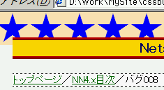
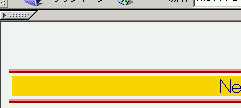

本来、外部スタイルシート内の相対パスはスタイルシートファイルを基準にしたパスであるが、NN4はこれをリンク元の文書ファイルを基準にしたパスとして扱う。
外部スタイルシート（一部）：
body {
margin: 2% 3% 15%;
background: url('img01.png') #f5f5f5;
background-repeat: repeat-x;
color: #000000;
}
外部スタイルシートはこの文書とは別のディレクトリに保存されています。また、外部シートと画像ファイル「img01.png」は同じディレクトリに保存されています。
WinIE6.0での表示（標準モード）
NN4.78での表示
スタイルシート内で絶対パスを用いるか、文書ファイルとスタイルシートファイルを同じディレクトリに保存することでバグを回避できます。
NN4.78では指定された背景画像が表示されません。